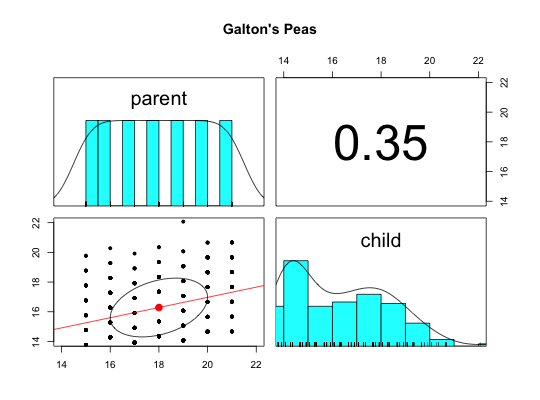
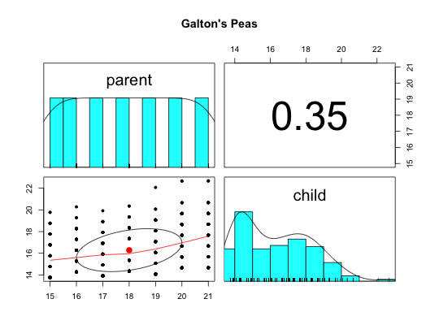

Francis Galton introduced the correlation coefficient with an analysis of the similarities of the parent and child generation of 700 sweet peas.
data(peas)
A data frame with 700 observations on the following 2 variables.
parentThe mean diameter of the mother pea for 700 peas
childThe mean diameter of the daughter pea for 700 sweet peas
Galton's introduction of the correlation coefficient was perhaps the most important contribution to the study of individual differences. This data set allows a graphical analysis of the data set. There are two different graphic examples. One shows the regression lines for both relationships, the other finds the correlation as well.
Stanton, Jeffrey M. (2001) Galton, Pearson, and the Peas: A brief history of linear regression for statistics intstructors, Journal of Statistics Education, 9. (retrieved from the web from http://www.amstat.org/publications/jse/v9n3/stanton.html) reproduces the table from Galton, 1894, Table 2.
The data were generated from this table.
Galton, Francis (1877) Typical laws of heredity. paper presented to the weekly evening meeting of the Royal Institution, London. Volume VIII (66) is the first reference to this data set. The data appear in
Galton, Francis (1894) Natural Inheritance (5th Edition), New York: MacMillan).
The other Galton data sets: heights, galton,cubits
#> Warning: some values will be clippeddescribe(peas)#> vars n mean sd median trimmed mad min max range skew kurtosis #> parent 1 700 18.00 2.00 18.00 18.00 2.97 15.00 21.00 6.0 0.00 -1.25 #> child 2 700 16.29 1.98 16.07 16.14 2.55 13.77 22.67 8.9 0.49 -0.64 #> se #> parent 0.08 #> child 0.07